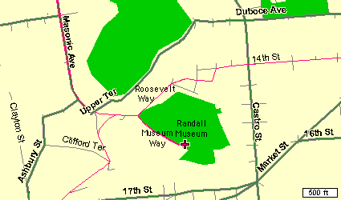
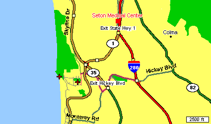
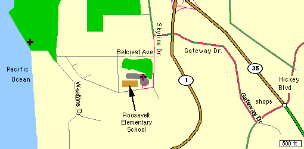

|
|---|
| Monthly meetings of the San Francisco Vultures are held on the 2nd Thursday of each month from 7:30pm to 9:30pm at the Randall Museum in San Francisco. The below map shows that easy access can be had from Market St, by going west on 14th St, joining Roosevelt Way, and turning left onto Museum Way. From the Richmond area, you can go up and over Masonic, and then down the hill to Roosevelt, and right onto Museum Way. Geary to Divisidaro, to Castro, to 14th also works well. |
|  |
|---|
| Group flying happens most weekend mornings, weather permitting, at the Roosevelt Elementary School near the Daly City/Pacifica town line. All are welcome, with encouragement and assistance gladly given. A club glider has helped many beginners get a good start at this most wonderful pastime. |
|  |
|---|
| This first map shows the general location with relationship to the Colma shopping area, Seton Medical Center, Rt 280, and Highway 1. From the North, take the Highway 1 exit off 280, and then take 35 south to Hickey Blvd. From the South, take 280 to Hickey Blvd west, and travel up and over the hill, crossing Rt. 35. |
|  |
|
This more detailed map shows the route from Rt. 35, down to the school. Coming from the north, you will turn right at Hickey, and then take the first right onto Gateway immediately past the shopping center. Follow Gateway through its residential neighborhood until it ends at Skyline. Turn left, and go down hill. Turn right into the schoolyard just after the second stop sign.
Note: the second mark out by the coast is a popular slope soaring site when the wind is up. If you come out on a clear weekend morning, and no one is at the school, we might be flying out at the coast. Just continue west, or ask someone for directions to the town dump. Honest, it doens't smell and is really a great place to fly, or stroll. |
Copyright 1999, Thayer Syme. All rights reserved